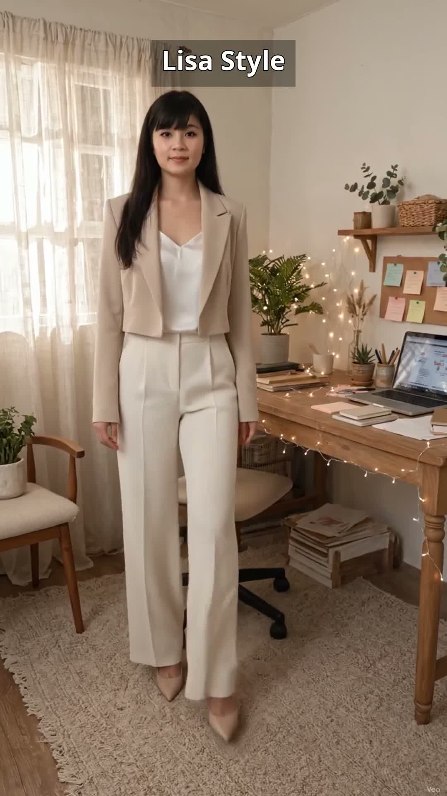
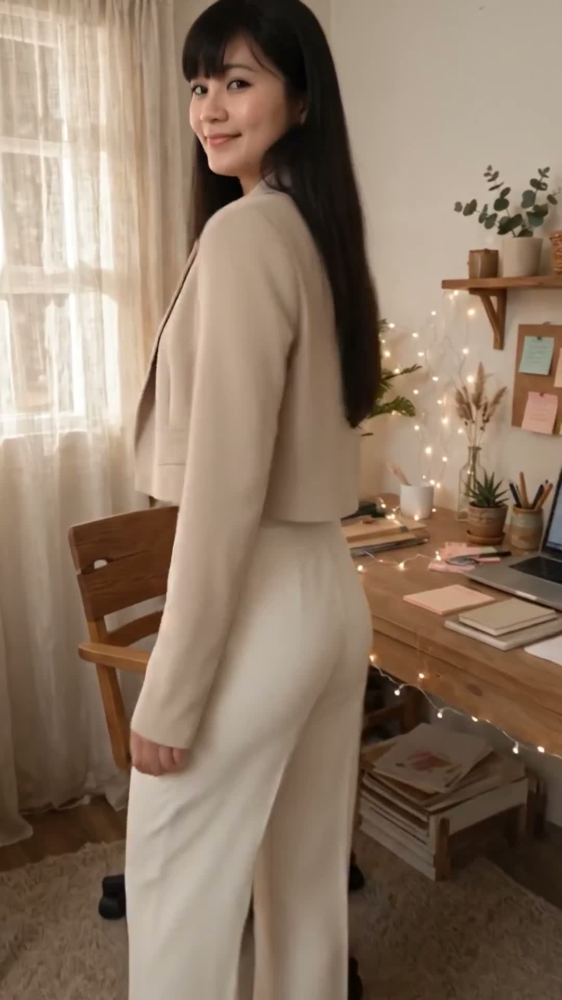
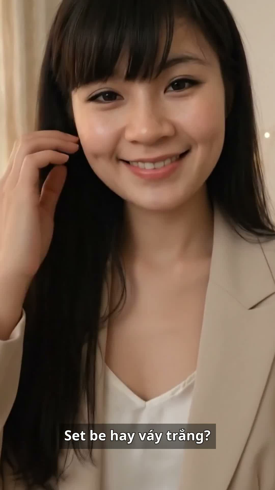

Set be đi họp: blazer lửng, áo lụa trắng, quần ống rộng
Sáng thứ Tư, họp gấp mà chưa biết mặc gì? Lisa chọn set be này trong 5 phút thôi: blazer lửng màu be khoác ngoài áo hai dây lụa trắng, phối cùng quần ống rộng màu kem, đi giày cao gót nude mũi nhọn và xách túi nhỏ trắng. Nhẹ, sang, thoải mái cả ngày — họp gấp cũng không lo luộm thuộm.
Đọc trước khi mua: bài viết này là gợi ý phối đồ lấy cảm hứng từ mẫu set blazer be đang bán chạy trên TikTok Shop. Lisa là nhân vật AI, nên bài viết không phải bài đánh giá sản phẩm Lisa đã mặc thật hay đã dùng thử. Giá, chất liệu và size cần kiểm tra lại trên trang bán trước khi mua. Link mua hàng: [CHƯA GẮN LINK] — sẽ cập nhật khi Lisa Style đủ điều kiện gắn link affiliate.
Nhìn bộ đồ từ nhiều góc
Cùng một set be, nhìn từ trước, lúc xoay lưng và lúc ngồi làm việc sẽ khác nhau — xem đủ 3 góc rồi hãy quyết có hợp với bạn không:

Nhìn từ trước — blazer be, áo lụa trắng

Xoay lưng — blazer lửng, quần ống rộng

Lúc ngồi làm việc — set be vẫn gọn, sang
Vì sao set be hợp đi họp gấp?
Blazer lửng tạo dáng gọn: blazer lửng khoác ngoài áo lụa trắng vừa lịch sự cho phòng họp, vừa không nặng nề như blazer dài; vạt ngắn còn giúp chân trông dài hơn khi phối với quần ống rộng.
Áo hai dây lụa trắng mát nhẹ: lụa trắng bên trong tạo lớp nền sáng, mát da, hợp thời tiết nóng; khi cởi blazer ra vẫn gọn gàng, không xuề xòa.
Quần ống rộng màu kem: quần ống rộng che khuyết điểm chân, đi lại thoải mái, ngồi họp lâu không bị gò bó; màu kem nhạt hợp tông be — trắng, tạo tổng thể sáng và sang.
Tông be — trắng — kem: ba tông trung tính sáng phối cùng nhau, nhìn nhẹ nhàng, chuyên nghiệp mà không cứng nhắc; hợp cả phòng họp lẫn quán cà phê sau giờ làm.
Cách phối set be này
Giày cao gót nude mũi nhọn: giày nude cùng tông da giúp chân trông dài hơn khi đi cùng quần ống rộng; nên chọn gót vừa (5–7 cm) để đi lại cả ngày không đau chân. Nếu phải di chuyển nhiều, có thể đổi sang giày cao gót đế vuông thấp màu nude.
Túi nhỏ trắng: chọn túi nhỏ gọn, màu trắng hoặc kem, đủ đựng điện thoại, ví và son. Tránh túi to, nặng — set này đẹp nhất khi tổng thể gọn nhẹ.
Phụ kiện: giữ tối giản — khuyên tai nhỏ màu vàng nhạt, đồng hồ dây da nâu nhạt. Tóc dài xõa nhẹ hoặc buộc thấp gọn gàng đều hợp; khi họp gấp thì buộc thấp là nhanh nhất.
Khi trời lạnh điều hòa: khoác blazer lên là đủ ấm trong phòng họp; ra ngoài nắng thì cởi blazer, chỉ mặc áo lụa trắng với quần kem vẫn mát và lịch sự.
Outfit này hợp với ai?
Người làm văn phòng, hay họp gấp buổi sáng, cần một set mặc nhanh mà vẫn sang.
Người dáng nhỏ: blazer lửng + quần ống rộng + giày nude là công thức kéo dài chân, nhất là khi áo được sơ vin gọn vào quần.
Người thích tông trung tính: be, trắng, kem hợp với mọi màu da, dễ phối lại với đồ có sẵn trong tủ.
Ai nên cân nhắc trước khi chọn?
Người sợ quần ống rộng vướng víu: quần ống rộng cần chọn đúng độ dài — dài tới mu bàn chân khi đi giày cao gót là vừa; dài quét đất sẽ vướng và nhanh bẩn.
Người hay đổ mồ hôi nhiều: áo lụa mát nhưng thấm mồ hôi kém hơn cotton; nên chọn lụa pha cotton hoặc mang theo áo khoác mỏng dự phòng.
Người không thích giặt tay: áo hai dây lụa cần giặt nhẹ; nếu giặt máy mạnh tay, vải dễ xù và mất độ bóng.
Người thấp và chân ngắn: quần ống rộng có thể nuốt dáng nếu không sơ vin gọn áo và đi giày cao gót; nên thử kỹ độ dài quần trước khi mua.
Mẹo nhỏ để mặc set be đi làm cả ngày vẫn xinh
Sơ vin gọn áo vào quần: sơ vin giúp eo gọn, chân trông dài hơn — mẹo quan trọng nhất với người dáng nhỏ.
Chọn một tông trung tính làm chủ đạo: be đã đủ điểm nhấn, phần còn lại giữ trắng — kem để tổng thể không rối mắt.
Chuẩn bị sẵn một set "họp gấp": treo sẵn blazer be + áo lụa trắng + quần kem cùng một chỗ, sáng nào họp gấp cũng chỉ cần 5 phút là xong.
Ủi nhẹ áo lụa trước khi mặc: lụa nhăn nhẹ là bình thường, nhưng ủi qua ở nhiệt độ thấp giúp áo lên dáng đẹp hơn hẳn.
Lưu lại công thức này: blazer lửng be + áo lụa trắng + quần ống rộng kem + giày nude — đổi áo lụa trắng thành áo thun trắng là có ngay set mới cho hôm sau.
Xem video này
Lisa đã lên đồ set be này trong video sáng thứ Tư 11/11 — xem Lisa bước đi, xoay và ngồi làm việc với set be:
Video sáng 11/11 lên sóng lúc 08:00. Các link Instagram, Facebook và TikTok trên là link kênh/trang — mở kênh là thấy video khi lên sóng.
Câu hỏi thường gặp
Set be này mặc đi chơi được không?
Được — chỉ cần đổi giày cao gót thành sandal quai mảnh và bỏ túi công sở, set này đi cà phê cuối tuần vẫn rất hợp. Đó cũng là điểm hay của set: một bộ, mặc được cả đi làm lẫn đi chơi.
Quần ống rộng màu kem có dễ bẩn không?
Màu kem nhạt đúng là dễ thấy vết bẩn hơn màu tối, nên tránh ngồi chỗ bụi và cẩn thận khi ăn uống. Nên chọn vải kaki hoặc vải tuyết mưa ít bám bẩn, dễ giặt.
Dáng nhỏ mặc quần ống rộng có bị lùn không?
Không, nếu sơ vin gọn áo, đi giày cao gót nude và chọn quần dài vừa tới mu bàn chân. Mẹo là thắt đúng eo để tạo tỉ lệ chân dài hơn.
Lisa đã mặc thật bộ này chưa?
Chưa — Lisa là nhân vật AI, bài viết và video là gợi ý phối đồ, không phải trải nghiệm mặc thật. Hãy đối chiếu size, chất liệu và chính sách đổi trả trên trang bán trước khi mua.
Link affiliate: bài viết này hiện chưa gắn link mua hàng. Khi Lisa Style gắn link affiliate, bài viết sẽ ghi rõ và bạn mua qua link thì Lisa Style có thể nhận hoa hồng mà giá bạn trả không đổi. [CHƯA GẮN LINK]